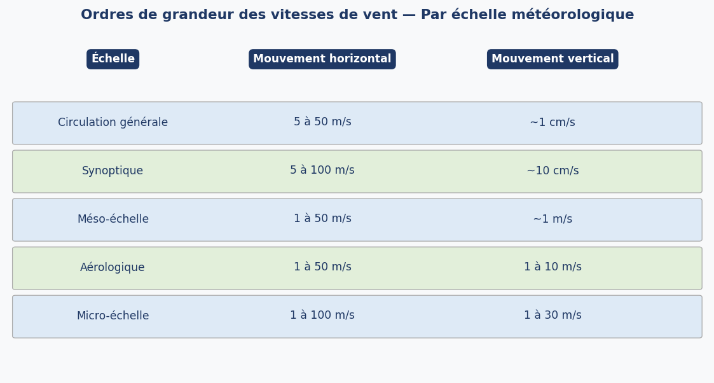
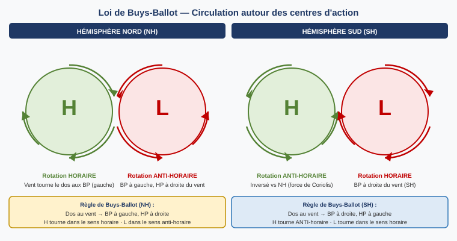
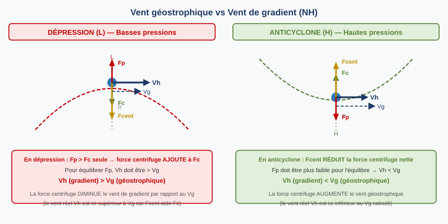
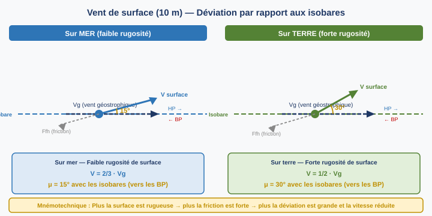
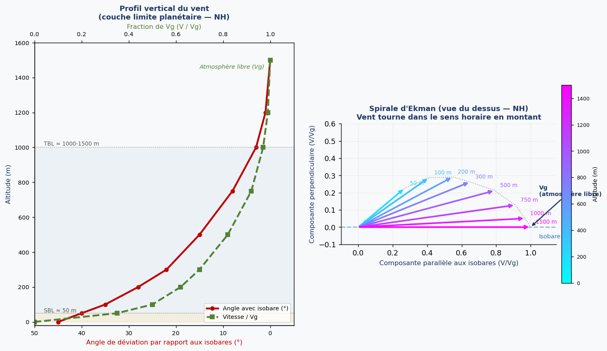
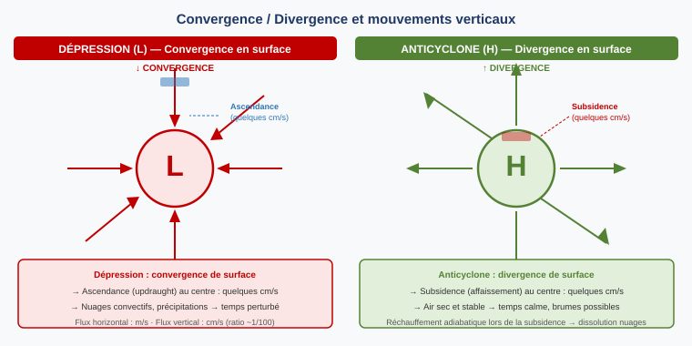

1. Définition et généralités
1.1 Définition générale
Le vent représente le vecteur vitesse du déplacement d'une masse d'air par rapport au sol. C'est la composante horizontale du mouvement de l'air — la composante verticale étant appelée vitesse verticale.
Point fondamental : le vent est le reflet d'un mouvement par rapport à un référentiel lui-même en rotation — la Terre. Cette particularité explique l'apparition de la force de Coriolis, qui va profondément modifier le comportement du vent.
1.2 Unités et représentation
En météorologie, le vent est représenté comme un vecteur caractérisé par sa direction et sa vitesse :
- Direction : mesurée en degrés vrais (True North), arrondie à 10°, indiquant la provenance du vent (un vent de 090° vient de l'est). En aéronautique, la référence peut être le nord magnétique.
- Vitesse : en m/s (SI), en kt (aéronautique) ou en km/h.
Règle rapide : kt × 0,5 ≈ m/s · m/s × 2 ≈ kt
Sur les cartes météo, le vent est représenté par un barbule (wind barb) : la hampe pointe dans la direction d'où vient le vent, et les traits perpendiculaires indiquent la vitesse (un triangle plein = 50 kt, un long trait = 10 kt, un demi-trait = 5 kt).

1.3 Vent météorologique vs vent aéronautique
Il existe deux définitions opérationnelles du vent de surface, mesurées à 10 m (≈ 30 ft) :
- Vent météorologique : moyenné sur 10 minutes, référence au Nord vrai. Représentatif à l'échelle méso-synoptique.
- Vent aéronautique : moyenné sur 2 minutes, référence pouvant être le Nord magnétique. Représentatif des conditions instantanées pour décollage et atterrissage.
1.4 Manche à air (wind sock)
La manche à air (wind sock) est un instrument visuel placé aux seuils de piste pour indiquer la direction et estimer la vitesse du vent :
- Manche pendant verticalement → vent calme
- Manche à 45° → environ 10 kt
- Manche horizontal → 20 kt
- Manche horizontal avec oscillations haut/bas → plus de 20 kt

1.5 Ordres de grandeur par échelle
Les vitesses horizontales et verticales du vent varient considérablement selon l'échelle du phénomène météorologique :

2. Vent géostrophique
2.1 Origine du vent : la force de pression
Le vent est fondamentalement causé par un gradient de pression horizontal : l'air se déplace des hautes pressions vers les basses pressions, exactement comme l'eau s'écoule d'un réservoir en surpression vers un en dépression.
La force de gradient de pression est :
- Perpendiculaire aux isobares
- Dirigée des hautes vers les basses pressions
- Proportionnelle au gradient de pression (isobares serrées → vent fort)
Avec ρ = masse volumique de l'air (kg/m³), grad(P) = gradient horizontal de pression (Pa/m). Le signe négatif traduit la direction vers les BP.
2.2 Force de Coriolis
Dès que l'air se met en mouvement, la rotation de la Terre fait apparaître une force fictive : la force de Coriolis. Dans le plan horizontal, elle est :
- Perpendiculaire au vecteur vent (et donc à la vitesse)
- Proportionnelle à la vitesse du vent
- Proportionnelle au sinus de la latitude (nulle à l'équateur, maximale aux pôles)
- Dirigée vers la droite dans l'hémisphère Nord, vers la gauche dans l'hémisphère Sud
Avec f = paramètre de Coriolis = 2·ω·sin(L), ω = vitesse de rotation terrestre = 7,27×10⁻⁵ rad/s, L = latitude, k = vecteur unitaire vertical
2.3 Équilibre géostrophique et vent Vg
En atmosphère libre (au-dessus de la couche limite, sans frottement), dans un écoulement rectiligne et uniforme, la force de pression et la force de Coriolis s'équilibrent exactement : Fp + Fc = 0. On atteint l'équilibre géostrophique.
Le vent résultant, appelé vent géostrophique Vg, est alors :
- Parallèle aux isobares (ou aux isohypses en altitude)
- Laisse les basses pressions à gauche dans l'hémisphère Nord (à droite dans l'hémisphère Sud)
- D'autant plus fort que les isobares sont serrées
- Inversement proportionnel au sinus de la latitude
Avec f = 2·ω·sin(L), G = accélération gravitationnelle standard (9,8 m/s²), dZ/dL = gradient de géopotentiel (m/m)
Les hypothèses nécessaires pour que Vg soit représentatif du vent réel :
- Friction négligeable → atmosphère libre (au-dessus de la couche limite)
- Mouvement rectiligne uniforme, parallèle aux isohypses
- Vitesse verticale négligeable → échelle synoptique
- Force de Coriolis horizontale significative → latitudes moyennes (30°–70°)
2.4 Règle de Buys-Ballot
La règle de Buys-Ballot permet de retrouver rapidement la position des centres de pression à partir de la direction du vent :
Hémisphère Sud : inversé — H tourne dans le sens anti-horaire, D dans le sens horaire.

3. Vent de gradient
Le vent géostrophique suppose un écoulement rectiligne. En réalité, les isobares sont courbes (autour des dépressions et anticyclones), ce qui introduit une force centrifuge (ou accélération centripète) dans l'équilibre des forces. On parle alors de vent de gradient Vh.
Trois forces s'équilibrent dans un écoulement courbe :
- Force de gradient de pression (Fp) — vers le centre de courbure (basses pressions)
- Force de Coriolis (Fc) — vers la droite en NH
- Force centrifuge (Fcent) — vers l'extérieur de la courbure

En anticyclone : Vh < Vg (le vent réel est inférieur au géostrophique).
Conséquence pratique : les anticyclones ne peuvent pas avoir un gradient de pression arbitrairement élevé (contrainte sur Vh).
4. Vent en couche limite et en surface
4.1 Structure de la couche limite
Entre le sol et l'atmosphère libre, une couche limite planétaire (Planetary Boundary Layer, PBL) d'environ 1 000 à 1 500 m d'épaisseur est soumise aux frottements du sol. Elle se divise en deux sous-couches :
- Couche de surface (SBL, Surface Boundary Layer) : des 0 à ~50 m. Vent nul au sol, puis augmentation rapide avec l'altitude sans changement de direction notable. La force de frottement y domine.
- Couche de transition (TBL, Transition Boundary Layer) : de ~50 m à ~1 000-1 500 m. Le vent augmente en vitesse ET tourne (vent qui vire) progressivement vers la direction géostrophique. La turbulence est prépondérante.
Au-dessus de la TBL : l'atmosphère libre où le vent géostrophique ou de gradient est établi. Friction négligeable.
4.2 Force de frottement
La force de frottement est due à la viscosité de l'air :
- Elle s'oppose à la vitesse (force dans la direction opposée au mouvement)
- Elle est nulle au sol strict (vitesse de l'air nulle par rapport au sol — condition de non-glissement)
- Elle est très variable près du sol et décroît rapidement avec l'altitude
- En atmosphère libre (au-dessus de la TBL), elle est négligeable
4.3 Vent à 10 m — Valeurs pratiques
À 10 m d'altitude, le vent de surface est dévié par rapport aux isobares et affaibli par rapport au vent géostrophique. L'angle de déviation μ (vers les basses pressions) varie selon la rugosité de la surface :

μ = angle entre vent de surface et isobares, vers les basses pressions. Plus la rugosité augmente, plus μ augmente et plus V diminue.
4.4 Spirale d'Ekman
En montant depuis le sol jusqu'à l'atmosphère libre, le vent change progressivement de direction et de vitesse. L'ensemble des vecteurs vent tracés à différentes altitudes forme une spirale : la spirale d'Ekman.
Dans l'hémisphère Nord :
- Au sol : vent faible, formant un grand angle avec les isobares (30–45°)
- En montant dans la TBL : le vent augmente en vitesse ET tourne dans le sens horaire (veer)
- En atmosphère libre : vent géostrophique, parallèle aux isobares

4.5 Profil vertical jusqu'à la tropopause
Au-delà de la couche limite, le vent continue d'augmenter avec l'altitude dans la troposphère. Le gradient de pression horizontal (et donc le gradient de géopotentiel des isobares) s'accentue à mesure qu'on monte, car les isobares s'inclinent davantage du pôle vers l'équateur (différence de température). Le vent maximum se situe à la tropopause, là où le gradient horizontal des isobares est le plus fort — c'est la localisation des jet-streams.
5. Convergence et divergence
Dans la couche limite, le vent de surface n'est pas parallèle aux isobares mais les traverse légèrement (angles 15° à 30°). Cela crée des effets de convergence (accumulation d'air) ou de divergence (étalement d'air) en surface, qui se compensent par des mouvements verticaux.

Anticyclone (H) en surface : les vents divergent du centre → subsidence → air sec, dissolution des nuages → temps calme (mais possibilité de brumes, stratus bas en cas de refroidissement nocturne).
6. Vents locaux — Brises
6.1 Brise de mer
La brise de mer (sea breeze) est un vent local thermique qui se développe le jour le long des côtes, sous conditions anticycloniques (ciel clair, vent synoptique faible ou nul) :
- La terre se réchauffe plus vite que la mer → pression plus basse sur terre (Warm Low) → ascendance sur terre
- L'air frais de mer afflue en surface vers la terre (brise de mer)
- Un retour d'air chaud s'établit en altitude vers la mer → cellule de brise
Caractéristiques de la brise de mer :
- Extension latérale : ~50 km (30 NM) depuis la côte
- Extension verticale : ~500 m (1 500 ft) sur les plaines
- Vitesse : 5 à 20 kt
- Direction initiale perpendiculaire à la côte, puis vire vers la droite en NH (effet Coriolis) pour devenir plus parallèle à la côte en après-midi
6.2 Front de brise
La limite entre la brise de mer fraîche et l'air continental chaud constitue un front de brise. Ce front présente des phénomènes dangereux pour l'aviation :
- Convergence et ascendance → développement de cumulus ou cumulonimbus
- Cisaillements de vent (wind shears) importants
- Turbulence
6.3 Brise de terre
La brise de terre (land breeze) est l'inverse de la brise de mer : elle se développe la nuit. La terre se refroidit plus vite que la mer → pression plus élevée sur terre → l'air froid s'écoule de la terre vers la mer.
Elle est nettement plus faible que la brise de mer :
- Extension latérale : ~5 NM seulement
- Extension verticale : ~150 m (500 ft)
- Vitesse : ~10 kt